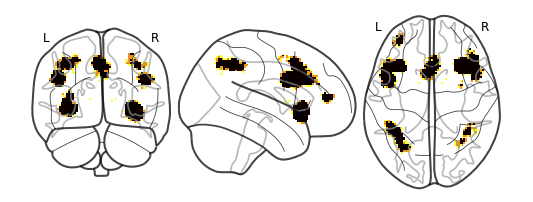
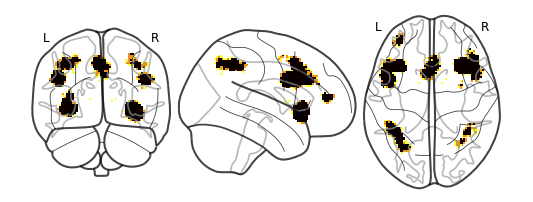
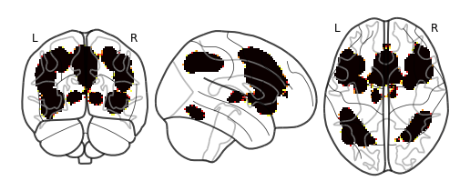
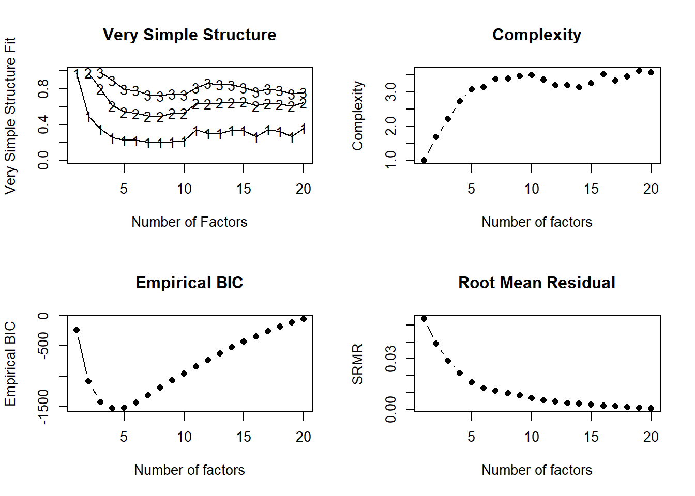
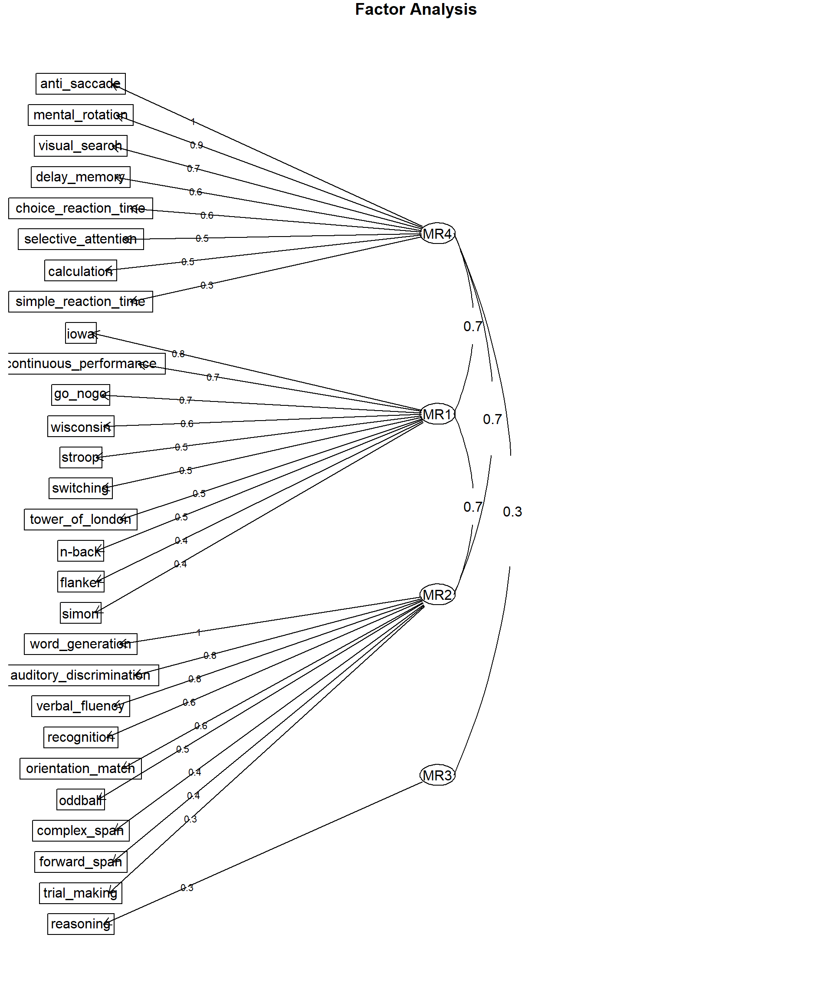
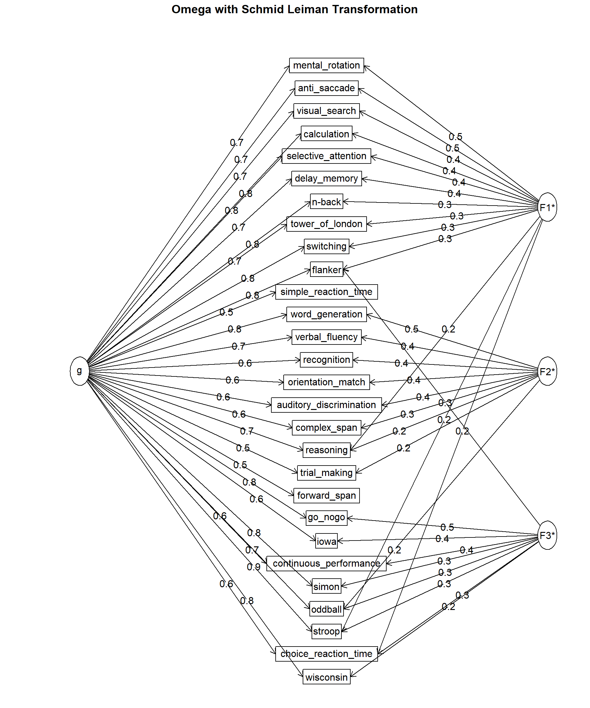

Code
knitr::include_graphics("wisconsin.png")
To summarize briefly, I followed the step of Beam et al. (2021, Nature Neuroscience) to find evidence for the structure of human cognition. Firstly, filtering all studies that included the testing paradigms that consisted with those used in our project from the database of Neurosynth, I conducted 28 meta-analysis separately on each group of fMRI studies. Thanks to NiMARE (a python research environment for neuroimaging meta-analysis), I could easily perform Multilevel Kernel Density Analysis (MKDA) on hundreds fMRI studies without manually coding.
knitr::include_graphics("wisconsin.png")
knitr::include_graphics("stroop.png")
cog_label <- readxl::read_xlsx("Selected_cogconstruct_label.xlsx")
label_occur <- readxl::read_xlsx("dtm_210114.xlsx")
occur_combined <- label_occur %>%
pivot_longer(cols = -c("study_id"), names_to = "term_name", values_to = "occurrence") %>%
left_join(cog_label, by = "term_name") %>%
filter(!is.na(meta_name)) %>%
group_by(study_id, meta_name) %>%
summarize(task_occurrence = sum(occurrence)) %>%
filter(task_occurrence > 1)
total_occur <- occur_combined %>%
group_by(meta_name) %>%
summarize(total_occurrence = length(study_id)) %>%
filter(total_occurrence > 16) %>%
mutate(Paradigm_name = meta_name,
Number_of_studies = total_occurrence) %>%
select(Paradigm_name, Number_of_studies) %>%
arrange(desc(Number_of_studies))Here is the summarize table for the number of included fMRI studies in each meta-analysis.
total_occur |>
htmlTable::htmlTable()| Paradigm_name | Number_of_studies | |
|---|---|---|
| 1 | Stroop_task | 1193 |
| 2 | Go/no_go_task | 752 |
| 3 | N_back_task | 572 |
| 4 | Word_generation_task | 359 |
| 5 | Oddball_task | 203 |
| 6 | Iowa_gambling_task | 201 |
| 7 | Recognition_task | 184 |
| 8 | Wisconsin_card_game | 179 |
| 9 | Anti_saccade_task | 177 |
| 10 | Flanker_task | 170 |
| 11 | Switching_task | 165 |
| 12 | Calculation_task | 151 |
| 13 | Stop_signal_task | 130 |
| 14 | Mental_rotation_task | 117 |
| 15 | Selective_attention_task | 117 |
| 16 | Tower_of_London_task | 103 |
| 17 | Verbal_fluency_task | 86 |
| 18 | Visual_search_task | 85 |
| 19 | Auditory_discrimination_task | 84 |
| 20 | Continuous_performance_task | 83 |
| 21 | Simon_task | 82 |
| 22 | Choice_reaction_time_task | 74 |
| 23 | Reasoning_task | 61 |
| 24 | Delay_memory_task | 51 |
| 25 | Orientation_match_task | 28 |
| 26 | Trial_making_test | 28 |
| 27 | Forward_span_task | 25 |
| 28 | Complex_span_task | 20 |
| 29 | Simple_reaction_time_task | 17 |
total_matrix <- fs::dir_ls("data", regexp = "xlsx") %>%
map(readxl::read_xlsx, col_names = TRUE) %>%
reduce(left_join, by = "voxel_num")Here is the representational similarity matrix of the 28 meta-analysis results, representing the similarity of the brain activities during these 28 different types of cognitive tasks.
total_nonzero <- total_matrix[which(rowSums(total_matrix) > 0),] %>%
select(-voxel_num)
cor_total <- round(cor(total_matrix),2)
cor_nonzero <- round(cor(total_nonzero),2)
melted_cor_nonzero <- melt(cor_nonzero) %>%
mutate(percrank=rank(value)/length(value))
correlate(total_nonzero, quiet = TRUE) |>
rearrange(method = "HC") |>
stretch() |>
mutate(across(c(x, y), as_factor)) |>
ggplot(aes(x, y)) +
geom_tile(aes(fill = r)) +
scico::scale_fill_scico(palette = "bam", midpoint = 0, direction = -1) +
coord_fixed() +
theme_minimal(base_size = 18) +
labs(x = "", y = "", fill = "Pearson's", color = "") +
theme(axis.text.x = element_text(angle = 45, hjust = 1))
# ggplot(data = melted_cor_nonzero, aes(Var2, Var1, fill = percrank))+
# geom_tile(color = "black")+
# scale_fill_viridis(discrete=FALSE)+
# theme_minimal()+
# theme(axis.text.x = element_text(angle = 45, vjust = 1,
# size = 7, hjust = 1),
# axis.text.y = element_text(size = 7))+
# coord_fixed()mds <- total_nonzero |>
cor(use = "pairwise") |>
smacof::sim2diss(to.dist = TRUE) |>
smacof::mds(ndim = 2, type = "mspline")
# plot(mds, plot.type = "Shepard", main = "Shepard Diagram (Ratio Transformation)")
# par(family = "SimHei")
plot(mds)
nfactors_test <- psych::nfactors(cor_nonzero)
fit <- psych::fa(cor_nonzero, 4)
psych::fa.diagram(fit)
fit_bifac <- psych::omega(total_nonzero, 3, plot = FALSE)
psych::omega.diagram(fit_bifac)